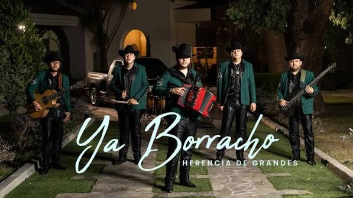
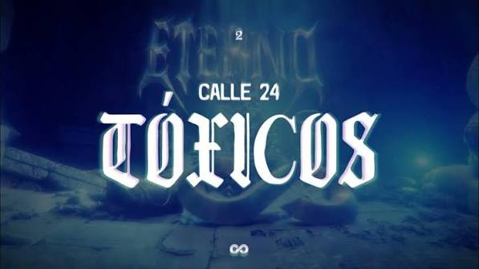
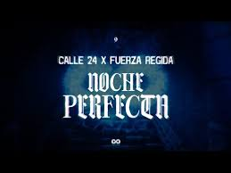
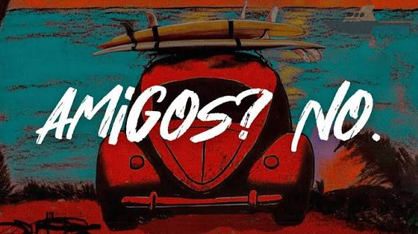

| foto | cancion | letra | video |
|---|---|---|---|
 |
YA BORRACHO | Me enamoré y creo que me fui de paso Hoy me declaro un loco obsesionado Y no te espantes, pues, no es nada malo Pero es que tú eres mi amor anhelado Cuando te vi sentí algo que ya no había aquí Quise elegir por mí, y me decidí por a ti Y ya borracho me parqueo por tu ventana Para llevarte las canciones que te encantan Pa' enamorarte las flores no son tan caras Pero llevan todo el cariño de mi alma Que pa' en febrero vendré frente a ti Con mis preguntas y digas que sí A hacer los novios y verte feliz Y muy contenta como yo por ti Herencia De Grandes Pregúntame qué es lo que me enamora Pa' describirte unas cuantas horas También pregunta qué quiero contigo Que seas dichosa al estar conmigo Y ya borracho, contéstame la llamada Pa' dedicarte unas bonitas palabras Así borracho, me animo a decirte todo Y puedo describir lo mucho que me encantas Decirte que me siento muy feliz Y emocionado por tenerte a ti Espero que quieras estar aquí Enamorada mirándome a mí Mirándome a mí |
ir a google |
| MORE |
Ranfla nueva, 2026 La que llegó, llegó, y la que no, se fue ¿Que te quiero? Quién sabe, ¿que te extraño? Tal vez Así nomás y discúlpeme usted Pero pasteleado no me como el pastel Se agüitó conmigo y regresó con su ex Todas vuelven, pa, mientras haya con qué Casi no la ubico, la conozco al revés No hay falla, siempre me dice sipis Nunca la hace de piqui, mientras se lo haga riqui (riqui) Bien guaino, traigo los ojos jipis No me estorba el fierrosqui, se van a quedar friskis (friskis) No hay falla, siempre me dice sipis Nunca la hace de piqui, mientras se lo haga riqui (riqui) Bien guaino, traigo los ojos jipis No me estorba el fierrosqui, se van a quedar friskis ¿Dónde y cuándo? Ando cazando Pa'l chirrisqui levantando Yo soy gente de don Leandro Marihuando, dando y dando Me enganché y no me casé Me la aventé porque estaba dos, tres No regresé porque ya me la sé No hubo ni cena, ¿pa qué? Ahora ya tenemo, como Pablo, caleta La que va marchando, la apunto en la libreta Y no soy de to, pero tengo la receta Si no baila ahorita, baila pa la vuelta Tu perro culazo, de esos que no respetan Pa mi desayuno, un cuquito de princesa No le hagan la reta, no ocupamo etiqueta No la muevas mucho porque se me inquieta No hay falla, siempre me dice sipis Nunca la hace de piqui, mientras se lo haga riqui (riqui) Bien guaino, traigo los ojos jipis No me estorba el fierrosqui, se van a quedar friskis (friskis) No hay falla, siempre me dice sipis Nunca la hace de piqui, mientras se lo haga riqui (riqui) Bien guaino, traigo los ojos jipis No me estorba el fierrosqui, se van a quedar friskis Pa cosas buenas, parcero, la colombiana Pa enamorarme de una, las venezolanas A pura señal, me agarré una americana Y que Diosito nos libre, viejo, de las mexicanas No hay falla, siempre me dice sipis Nunca la hace de piqui, mientras se lo haga riqui (riqui) Bien guaino, traigo los ojos jipis No me estorba el fierrosqui, se van a quedar friskis (friskis) No hay falla, siempre me dice sipis Nunca la hace de piqui, mientras se lo haga riqui (riqui) Bien guaino, traigo los ojos jipis No me estorba el fierrosqui, se van a quedar friskis No hay falla, siempre me dice sipis Nunca la hace de piqui, mientras se lo haga riqui Bien guaino, traigo los ojos jipis No me estorba el fierrosqui, se van a quedar friski |
ir a google | |
 |
Toxicos | No vale la pena pelear Si sabemos que no vamos a dejarnos Es mejor llevar la fiesta en paz Lo digo porque te amo Sé que no quieres mirarme con otra Y yo no quiero mirarte con otro güey Imaginarme que alguien más te toca Me pongo loco porque yo soy el único rey Que si me salgo pa la calle, sales tú también Yo aquí pisteando y tú pensando que traigo otra piel Si tú sales con tus amigas, yo te dejo ser Porque hay confianza y, además, no me gusta joder Y, ay, a veces parece que nos odiamos Y cuando lo hacemos, sé que nos amamos Y, ay, otra semana más y nos matamos Y este amor tóxico no lo dejamos, uh Ya no hay que pelear, mami Esto nos está haciendo mucho daño ¿Que no ves que todo esto nos está mandando a la chingada, ma? Hasta alucinas que llego oliendo a mujeres Tú con tus cosas diciendo: "Ya no me quieres" Traes ganas de molestar, yo también puedo chingar A ver, presta el celular pa revisarte todo el Whats El mío no te voy a dar, nada le vas a encontrar Te conozco, estás bien loca, que me lo vas a quebrar Y, ay, a veces parece que nos odiamos Y cuando lo hacemos, sé que nos amamos Y, ay, otra semana más y nos matamos Y este amor tóxico no lo dejamos, uh |
ir a google |
 |
Noche perfecta | Hoy es la noche perfecta Ya alístese, mi reina, que hoy la sacaré a pasear Quiero cantarle unas canciones, rozando sus labios Que no se pueda resistir a quererme besar Hoy es la noche perfecta Vamos a recorrer tomando toda la ciudad Arrímese, no muerdo, nomás en la intimidad Dígame si cree en el amor, pero ese del real Hoy voy a conquistarla como nadie lo ha hecho Y voy a enamorarla hasta poder tenerla dormida en mi pecho Hoy voy a conquistarla, que eso está más que hecho Por usted soy su esclavo, soy su mandadero y hasta su pendejo Ahí te va, chiquiona Qué tal y si nos subimos a la sierrita Y compramos un seicito Y ahí despuecito vemos si me da un besito Así suena la Calle 24, chiquitita Hoy es la noche perfecta No sé si sepa, pero soy bien terco y yo la quiero a usted Acurrúquese en mis brazos, yo la cuidaré Hacerla sentir que está amando por primera vez Hoy voy a conquistarla como nadie lo ha hecho Hoy voy a enamorarla hasta poder tenerla dormida en mi pecho Hoy voy a conquistarla, eso está más que hecho Por usted soy su esclavo, soy su mandadero y hasta su pendejo Uh Y nomás por ti, mi niña Fuerza Regida |
ir a google |
 |
Amigos no | Llena de fajos de billetes- México, para asesinar narcotraficantes- (me mira) Jacobo, termina una época- Son las ocho en punto de la noche, la ley lo permite Y en una de las partes, lo acusa a usted- (como yo la miro) Ola de terror a la humanidad toda Se metió temprano, se peleó con su papá Y yo como un tonto en la disco esperándola Ella juega sucio, me sabe manipular Quiere ser mi amiga, y yo, aquí, amándola Ella no me mira como yo la miro Yo le doy mi vida, y ella, ni un besito Esta noche, niña, tú te vas conmigo Haremos de todo, menos ser amigos Menos ser amigos, amigos Ser amigos, amigos Menos ser amigos, amigos Ser amigos ¡Uh! Así suena el Neto, mijita Y su compa Oscar Maydon Loca trastornada, yo no sé qué le pasó Ya toma de todo, siendo de cualquier licor Cuando baila, todos sus problemas se le van Le robé un besito y ya no me dijo na Ahora ella me mira como yo la miro Ahora hasta su amiga quiere andar conmigo Esta noche, niña, tú te vas conmigo Haremos de todo, menos ser amigos Menos ser amigos, amigos Ser amigos, amigos Menos ser amigos, amigos Ser amigos, amigos Menos ser amigos |
ir a google |